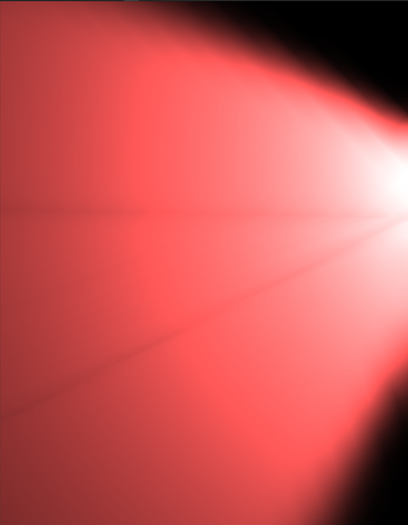
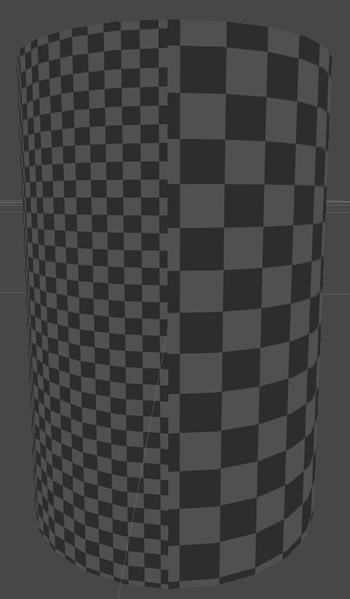

Generating lightmap UVs
Unity can calculate the UVs for baked lightmapsA pre-rendered texture that contains the effects of light sources on static objects in the scene. Lightmaps are overlaid on top of scene geometry to create the effect of lighting. More info
See in Glossary when you import a model, or you can provide your own data.
This page contains the following information:
How to provide your own lightmap UVs
You can author your own lightmap UVs in the content creation software of your choice. Unity uses these UVs as input for its calculations.
Where you put this data depends on whether you are providing UVs for baked lightmaps, real-time lightmaps, or both:
- For baked lightmaps, you must place lightmap UVs in the Mesh.uv2. This channel is also called “UV1”.
- For real-time lightmaps:
- If you already have baked lightmap UVs in the
Mesh.uv2of your meshThe main graphics primitive of Unity. Meshes make up a large part of your 3D worlds. Unity supports triangulated or Quadrangulated polygon meshes. Nurbs, Nurms, Subdiv surfaces must be converted to polygons. More info
See in Glossary, and you want to use the same UVs as input for the real-time lightmaps, you do not need to do anything. Unity falls back to sharing the baked lightmap UVs. - If you already have baked lightmap UVs in
Mesh.uv2, and you want to provide different UVs as input for your real-time lightmaps, place the real-time lightmap UVs in Mesh.uv3, also called “UV2”. - If you do not already have baked lightmap UVs in the second channel of your mesh, it’s your choice whether you use
Mesh.uv2orMesh.uv3for real-time lightmap UVs.
- If you already have baked lightmap UVs in the
A good UV set for lightmaps should adhere to the following rules:
- It should be within the [0,1] x [0,1] UV space.
- It should have a wide enough margin between individual charts. For more information, see UV overlap feedback.
- It should not have any overlapping faces.
- There should be a low difference between the angles in the UV and the angles in the original geometry.
- There should be a low difference between the relative scale of triangles in the UV and the relative scale of the triangles in the original geometry), unless you want some areas to have a higher lightmap resolution.
How to automatically generate lightmap UVs
You can tell Unity to automatically generate lightmap UVs for a Model, using the Model Import Settings.
- Select the Model in your Project view. Unity opens the Model Import Settings in the InspectorA Unity window that displays information about the currently selected GameObject, asset or project settings, allowing you to inspect and edit the values. More info
See in Glossary. - In the Model Import Settings, navigate to the Model tab, and then the Geometry section.
- Tick the Generate Lightmap UVs checkbox. The Lightmap UVs settings section appears below the Generate Lightmap UVs checkbox.
- Optional: Configure the settings in the Lightmap UVs settings section. See Settings for more information.
- Click the Apply button. Unity generates lightmap UVs into the Mesh.uv2 channel.
Automatic lightmap UV generation settings
These are the settings that appear in the Model tab of the Model Import Settings, when you enable Generate Lightmap UVs.
| Property: | Function: | |
|---|---|---|
| Hard Angle | The angle between neighboring triangles (in degrees) after which Unity considers it a hard edge and creates a seam. You can set this to a value between 0 and 180. This is set to 88 degrees by default. If you set this to 180 degrees, Unity considers all edges smooth, which is realistic for organic models. The default value (88 degrees) is realistic for mechanical models. |
|
| Angle Error | The maximum possible deviation of UV angles from the angles in the source geometry (as a percentage from 0–100). This is set to 8% by default. This controls how different the triangles in UV space can be to the triangles in the original geometry. Usually this should be fairly low, to avoid artifacts when applying the lightmap. |
|
| Area Error | The maximum possible deviation of UV areas from the areas in the source geometry (as a percentage from 0–100). This is set to 15% by default. This controls how well Unity preserves the relative triangle areas. Increasing the value allows you to create fewer charts. However, increasing the value can change the resolution of the triangles, so make sure the resulting distortion does not deteriorate the lightmap quality. |
|
| Margin Method | Whether you specify the Pack Margin manually, or whether Unity automatically calculates it. | |
| Manual | You specify the Pack Margin manually. | |
| Calculate | Based on expected lightmap resolution and object scale, Unity calculates a Pack Margin just large enough to avoid UV overlaps. | |
| Pack Margin | The margin between neighboring charts (in pixels), assuming the Mesh takes up the entire 1024x1024 lightmap. You can set this to a value between 1 and 64. A larger value increases the margin, but also increases the amount of space the chart needs. This is set to 4 pixels by default. For more information, see Pack Margin. This property is only visible when Margin Method is set to Manual. |
|
| Min Lightmap Resolution | The minimum lightmap resolution (in texels per unit) of the MeshRenderers that use this Mesh, across all Scenes. The lightmap resolution of a MeshRenderer is a combination of the MeshRenderer’s Scale in Lightmap property, and the Lightmap Resolution property of the Lighting Settings Asset of the Scene it appears in.For more information, see Min Lightmap Resolution and Min Object Scale. Unity uses this information to calculate pack margin. This property is only visible when Margin Method is set to Calculate. |
|
| Min Object Scale | The minimum transform scale that of the GameObjects that use this Mesh, across all Scenes. For more information, see Min Lightmap Resolution and Min Object Scale. Unity uses this information to calculate pack margin. This property is only visible when Margin Method is set to Calculate. |
|
Troubleshooting automatically generated lightmap UVs
Pack Margin
To allow filtering, the lightmap contains lighting information in texels near the chart border, so always include some margin between charts to avoid light bleeding when applying the lightmap.
The lightmap resolution defines the texel resolution of your lightmaps. LightmappersA tool in Unity that bakes lightmaps according to the arrangement of lights and geometry in your scene. More info
See in Glossary dilate some chart texels in the lightmap to avoid black edges, so the UV charts of your Mesh need to be at least two full texels apart from each other to avoid light bleeding. Use the Pack Margin setting to ensure you have enough margin between the UV charts of your geometry.
In lightmap UV space, the padding between charts need to be at least two full texels in order to avoid UV overlapping and accidental light bleeding. In this image, the black space represents the space between charts.
Min Lightmap Resolution and Min Object Scale
Placing UV charts too close together may cause cross-chart texel bleeding in the final lightmap. Placing charts too far away from each other wastes memory. The ideal packing margin of an object depends on how many lightmap texels are allotted to it.
The number of texels that Unity uses for a MeshRenderer depends on the MeshRenderer’s lightmap resolution and transform scale. To calculate a good margin, Unity needs to know the expected minimum values for these properties.
A MeshRenderer’s lightmap resolution is a combination of the Lightmap Resolution property of the Lighting Settings Asset for the SceneA Scene contains the environments and menus of your game. Think of each unique Scene file as a unique level. In each Scene, you place your environments, obstacles, and decorations, essentially designing and building your game in pieces. More info
See in Glossary that the MeshRenderer appears in, and the Scale in Lightmap property of the MeshRenderer. Note that this means that the same MeshRenderer can have a different lightmap resolution in different Scenes.
You can use the Inspector to view the lightmap resolution of a MeshRenderer in a given Scene:
- In the Scene viewAn interactive view into the world you are creating. You use the Scene View to select and position scenery, characters, cameras, lights, and all other types of Game Object. More info
See in Glossary or Hierarchy, select the GameObjectThe fundamental object in Unity scenes, which can represent characters, props, scenery, cameras, waypoints, and more. A GameObject’s functionality is defined by the Components attached to it. More info
See in Glossary that has the MeshRenderer component. - In the Inspector, navigate to the MeshRenderer component’s Lightmapping section.
- Open the Baked Lightmap fold-out. Unity displays the MeshRenderer’s lightmap resolution in the baked lightmap with the label Lightmap Resolution, and its transform scale in the baked lightmap with the label Lightmap Object Scale.
Angle distortion
The following screenshots demonstrate equal resolution, but with different UVs. The first image has a high Angle Error, and the result contains unintended artifacts. The second image has the default Angle Error (8%). In Meshes with more triangles, angle distortion can significantly distort the shape.

Area distortion
In the image below, two spot lights with the same parameters light the sides of a cylinder. The right-hand side of the cylinder has a higher Area Error value, which distorts the triangles and leads to a lower resolution, creating artifacts in the light.
